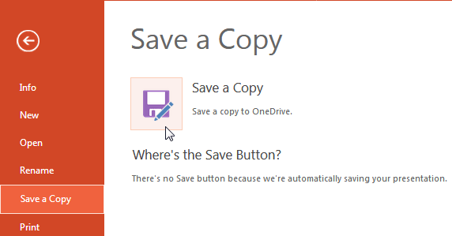

Figure 2: PowerPoint Online Backstage view
The Backstage view in Powerpoint Online provides access to the File menu and some other options. However, don’t expect the Backstage view within PowerPoint Online to be as full featured, compared to the Backstage view in PowerPoint’s desktop versions—in fact, there’s almost no feature to control interface elements. The options here mainly accomplish basic tasks such as sharing, saving, downloading, etc.
You access Backstage view from the File tab, as shown in Figure 1, below. The File tab, highlighted in blue is placed towards the extreme-left of the Ribbon.
Figure 1: File tab in PowerPoint Online
Although it looks like a tab, the File tab brings up a menu on the left side of the Backstage view that it spawns, as shown in Figure 2. Notice that there are no other menus Within Powerpoint Interface Backstage view, you'll find features for managing your PowerPoint presentation files, creating and saving files, printing slides, downloading and sharing.
Figure 2: PowerPoint Online Backstage view
When Backstage view is open, you can find several options on the left side. These options, when selected open individual Panes. Here is a a brief introduction to these options:
There are two options within this pane: Open in PowerPoint and Previous Versions.
Offers you various Themes to start a new Presentation.
When you launch PowerPoint, and select the File menu, you'll see the Open Pane visible within Backstage view with recently opened presentations listed (see Figure 2, above). If you want to open a presentation that is not listed here, click the More on OneDrive link (highlighted in red within Figure 2), navigate to the OneDrive folder where you have saved it, and open it.
You can rename the open presentation using this option.
There is no Save option in PowerPoint Online since PowerPoint saves after every change you make automatically. If you want to go back to a previous stage in your presentation, you can use PowerPoint Online’s versioning feature that’s accessed from the Info option in backstage view. Also, you can save the open presentation as a new presentation (a copy) using the Save a Copy option, shown in Figure 3, below.

Figure 3: Save as a new presentation
Prints the open presentation.
Includes two options:
Share with people: Share your slides with other peoples.
Embed: Used to create an embed code for the open presentation that you can post on your web site or blog.
This pane, shown in Figure 4, below includes three options:

Figure 4: Download options
The About pane, shown in Figure 5, below includes four options:
Figure 5: About options
The Help pane, shown in Figure 6, below includes two options:
Figure 6: Help options
To go back from Backstage view to Normal view, you click the Back arrow placed on the top left of the interface, as shown highlighted in blue within Figure 7 below.
Figure 7: Back arrow within Backstage view